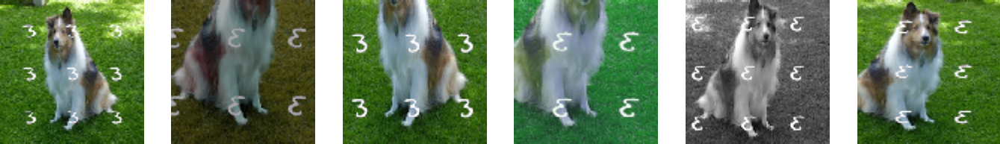
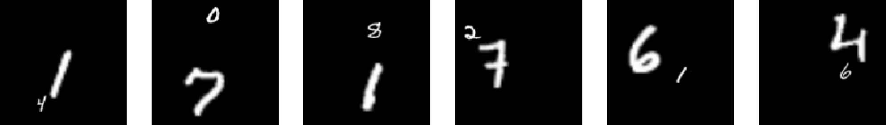

Feature suppression poses an open challenge to contrastive learning research


Example images from the DigitOnImageNet dataset (top) and the Modified MultiDigits dataset (bottom).
In contrastive learning, the presence of "color distribution" features suppresses the competing features of "object classes". This is typically addressed by color augmentation; however, there may be scenarios where known augmentations cannot fully address this feature suppression effect. We quantitatively study the feature suppression phenomenon by constructing datasets with explicit and controllable competing features, and see how well contrastive learning methods continue to perform.
We create three datasets:
DigitOnImageNet where MNIST digits are overlaid on ImageNet images via channel addition,
Modified MultiDigits where only two digits are considered but one of them is of a varying size, and
RandBit where a real image is concatenated with an image of a random integer in the channel dimension.
On the DigitOnImageNet dataset, we discover a performance trade-off between digit recognition ability and object recognition ability. This shows that simple features suppress the learning of difficult features, when both are shared between two augmented views. It is therefore difficult to learn both of the competing features using existing contrastive losses.
On the Modified MultiDigits dataset, we find that the learned representations of the smaller digit degenerate significantly when the size of the other digit increases, whereas the dominant object can still be learned well. Therefore, large objects can suppress the learning of features of smaller objects.
On the RandBit dataset, we observe that even adding a few bits of a competing feature will quickly destroy linear evaluation accuracy. The model quickly learns these few added bits, but then saturates in performance. Adding these bits thus compromises the learning of more generalizable features.